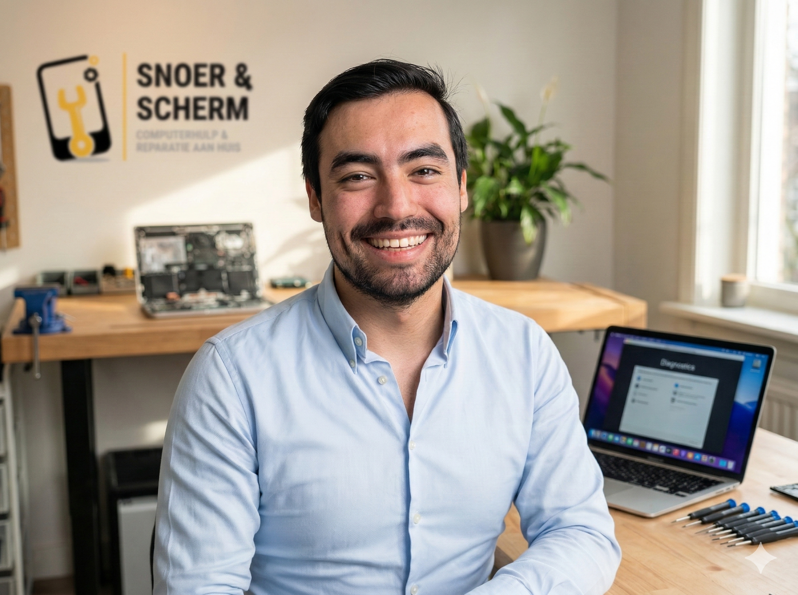
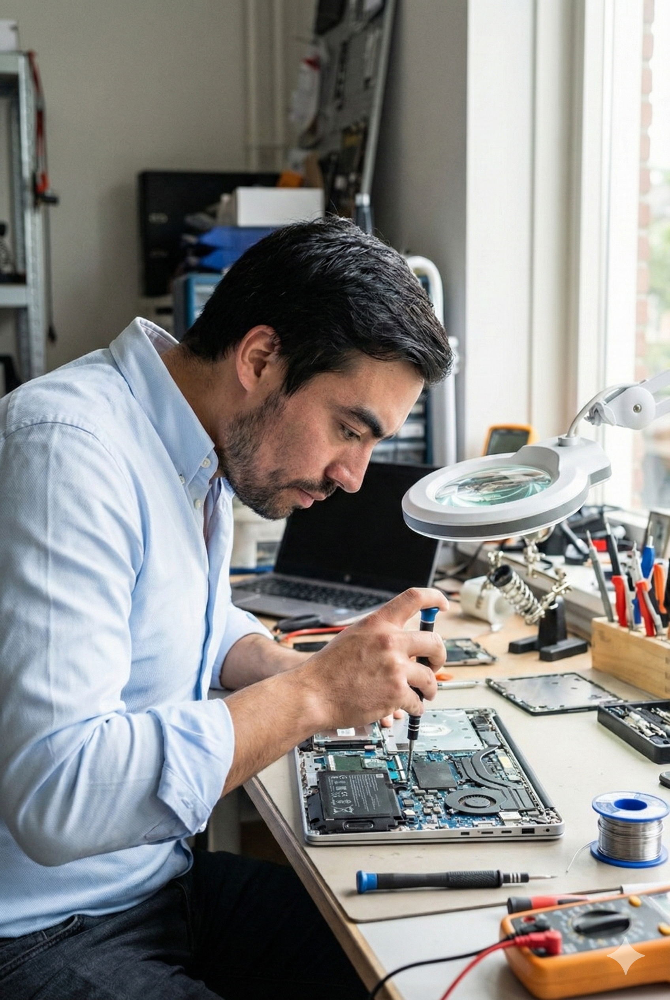

Ik ben Maurits van Snoer & Scherm. Ik repareer uw computer, laptop, koffiemachine of ander elektrisch apparaat. Aan huis in Delft en omstreken, of op afspraak in te leveren naast station Delft. Eerlijk advies in begrijpelijke taal, geen stress, gewoon een snelle oplossing.

Ik neem de tijd voor u. Ik leg moeilijke termen simpel uit, zodat u precies weet wat er speelt.
U hoeft niet te sjouwen met zware computers. Ik kom naar u toe in Delft en omstreken, waaronder Delfgauw, Pijnacker, Nootdorp en Rijswijk.
Vooraf helderheid over de kosten. Kan ik het niet maken? Dan betaalt u niets.
Van een kapotte laptop tot een stuk keukenapparaat. Ik deel mijn diensten in per soort apparaat, zodat u snel vindt wat u zoekt.
Is uw computer traag, vol virussen, gehackt of bent u wachtwoorden kwijt? Ook voor bestanden terughalen, en de installatie en uitleg van een nieuwe computer, printer of telefoon kunt u bij mij terecht.
Start uw laptop niet meer op, of is het scherm gebarsten? Ik vervang de kapotte onderdelen snel en vakkundig.
Water, koffie of iets anders over uw laptop gemorst? Dit is spoed: elke minuut telt. Lees direct wat u nu moet doen.
Wat nu te doenSenseo, Nespresso, of een volautomaat van De'Longhi, Philips of Jura die lekt, niet meer maalt of geen koffie meer geeft.
Meer over koffiemachinesVan robotstofzuigers zoals de Roomba of Roborock tot een steelstofzuiger die zijn zuigkracht verliest.
Meer over stofzuigersEen afzuigkap die niet meer zuigt, of een stoomstrijkijzer, waterkoker, mixer of luchtbevochtiger die ermee stopt.
Meer over huishoudelijke apparatenEen platenspeler, luidsprekers of versterker die kraakt, hapert of stil blijft.
Meer over audioapparatuurEen boormachine of schuurmachine die niet meer op volle kracht draait of niet meer aanslaat.
Meer over gereedschapRookmachines, lichteffecten, actieve speakers, mengpanelen en versterkers. Voor buurthuizen, verenigingen, cafés en dj's in Delft.
Meer over feest- en AV-apparatuurE-readers, draadloze koptelefoons en printers die het niet meer doen.
Meer over kleine elektronica
Technologie speelt een hoofdrol in ons dagelijks leven. De ontwikkelingen gaan razendsnel. Sinds 2026 gelden er in Europa strengere regels rondom het 'Recht op Reparatie' (Right to Repair). Fabrikanten moeten onderdelen langer beschikbaar stellen.
Dit is een cruciale stap vooruit. Het helpt de enorme berg elektronisch afval (e-waste) te verkleinen. Door uw kapotte apparaat te repareren, bespaart u niet alleen geld. U draagt direct bij aan een duurzamere wereld.
Tegelijkertijd zien we nieuwe gevaren. Digitale criminaliteit neemt sterk toe. Oplichters gebruiken kunstmatige intelligentie (AI) om zeer overtuigende, valse berichten te maken. Een solide beveiliging is vandaag de dag geen luxe, maar een noodzaak.
Ik wil techniek toegankelijk en veilig houden voor iedereen. U verdient een betrouwbaar aanspreekpunt voor al uw digitale zorgen.
Geen ingewikkelde procedures. Gewoon drie heldere stappen naar een werkend apparaat.
Bel mij of stuur een e-mail. Vertel me kort wat het probleem is met uw apparaat. Ik luister aandachtig en stel een paar gerichte vragen.
Ik onderzoek uw apparaat. Dit kan vaak comfortabel bij u thuis. Ik stel vast wat er kapot is. U krijgt direct een eerlijke, vaste prijsopgave.
Na uw duidelijke akkoord ga ik direct aan de slag. Ik repareer uw apparaat zorgvuldig. U betaalt de prijs pas als alles weer perfect werkt.
Werkt of studeert u in het centrum van Delft? Dan hoeft u niet op mij te wachten thuis. U kunt uw apparaat inleveren bij The Social Hub, Van Leeuwenhoekpark 1, 2611 DW Delft — direct naast station Delft.
Uitsluitend op afspraak
Er is geen balie en geen inloopspreekuur. Ik kom er zelf alleen naartoe op het tijdstip dat we vooraf hebben afgesproken. Zonder afspraak kunt u daar niets afgeven.
Helemaal niets. Ik werk met een strikt no-cure no-pay beleid. Kan ik het probleem niet oplossen? Dan bent u mij ook geen kosten verschuldigd. Zo loopt u geen enkel risico.
Dat is meestal niet nodig. Ik kom graag bij u thuis in Delft en directe omgeving, waaronder Delfgauw, Pijnacker, Nootdorp en Rijswijk. Werkt of studeert u dicht bij het centrum van Delft? Dan kunt u uw apparaat ook inleveren bij het inleverpunt naast station Delft, maar uitsluitend op een vooraf afgesproken tijdstip. Er is daar geen balie en geen inloop.
Bij acute problemen, zoals een gehackt e-mailaccount of mogelijke oplichting, probeer ik altijd binnen 24 uur te reageren. Veiligheid en toegang tot uw gegevens hebben mijn hoogste prioriteit.
Meer dan u zou denken. Zo heb ik onlangs nog een rookmachine en een afzuigkap gerepareerd. Ook koffiezetapparaten, stofzuigers en andere kleine elektronica pak ik graag op. Twijfelt u of ik uw apparaat kan maken? Bel of app mij gerust, dan denk ik met u mee.